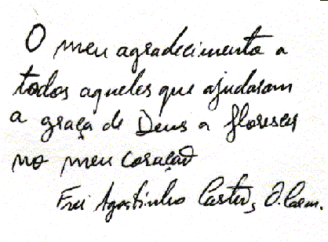

<!DOCTYPE html>
<html lang="PT"></html>

<head>
	<title>† Paróquia-SAC</title>

	<!-- Metas -->
	<meta charset="utf-8">
	<meta name="viewport" content="width=device-width, initial-scale=1.0">
	<meta name="description" content="Paróquia de Santo Antonio dos Cavaleiros">
	<meta name="keywords" content="paróquia de sac, sac">
	<meta name="author" content="RMoreno">
		
	<!-- Styles -->
	<link rel="icon" href="static/assets/images/favicon.ico" type="image/x-icon">
	<link rel="shortcut icon" href="static/assets/images/favicon.ico" type="image/x-icon"/>
	<link rel="stylesheet" href="static/css/bootstrap.css" type="text/css" media="screen">
	<link rel="stylesheet" href="static/css/bootstrap-responsive.css" type="text/css" media="screen">    
	<link rel="stylesheet" href="static/css/supersized.core.css" type="text/css" media="screen">  
	<link rel="stylesheet" href="static/css/style.css" type="text/css" media="screen">
	<link rel="stylesheet" href="static/css/camera.css" type="text/css" media="screen">

	<!-- JS -->
	<script type="text/javascript" src="static/js/jquery.js"></script>  
	<script type="text/javascript" src="static/js/jquery.easing.1.3.js"></script>
	<script type="text/javascript" src="static/js/superfish.js"></script>
	<script type="text/javascript" src="static/js/jquery.ui.totop.js"></script>
	<script type="text/javascript" src="static/js/supersized.core.3.2.1.js"></script>
	<script type="text/javascript" src="static/js/camera.js"></script>
	<script type="text/javascript" src="static/js/jquery.mobile.customized.min.js"></script>
	<script type="text/javascript" src="static/js/camera.wrap.js"></script>
	

</head>

<body class="main">
	<div id="main">
		<div id="inner">
			
			<div class="container">
				<div class="row">
					<div class="span12">
						<header class="clearfix">
							<div class="logo_wrapper">
								<!-- <a href="index.html" class="logo"> -->
																		
								</a>							
							</div>
						</header>	
					</div>	
				</div>	
			</div>
			
			<div class="top1">
				<div class="container">
					<div class="row">
						<div class="span12">
							<div class="navbar navbar_">
								<div class="navbar-inner navbar-inner_">
									<a class="btn btn-navbar btn-navbar_" data-toggle="collapse" data-target=".nav-collapse_">
										<span class="icon-bar"></span>
										<span class="icon-bar"></span>
										<span class="icon-bar"></span>
									</a>
									<div class="nav-collapse nav-collapse_ collapse">
										<ul class="nav sf-menu clearfix">					
											<li><a href="index.html">Início</a></li>
											<li class="sub-menu sub-menu-1"><a>Paróquia<em></em></a>
												<ul>
													<li><a href="bio-pedromonteiro.html">Pároco</a></li>
													<li><a href="index-4.html">Conselho Pastoral</a></li>
													<li><a href="index-5.html">Conselho Económico</a></li>
													<li><a href="index-2.html">História</a></li>																		
												</ul>						
											</li>
											<li><a href="index-6.html">Acção Pastoral</a></li>
											<li><a href="index-3.html">Comunidade Carmelita</a></li>
											<li><a href="contactos.html">Contactos</a></li>
											<div style="padding-top: 20px;">	
    											<a href="mailto:paroquia.sac@mail.pt" target="_blank">
        											
    											</a>
    											<a href="https://www.facebook.com/paroquiasac#" target="_blank" class="social-icon">
        											
    											</a>
    											<a href="https://www.youtube.com/channel/UCJoe96Is6j8rYWz3oHnvGqA" target="_blank" class="social-icon">
        											
    											</a>
											</div>
										</ul>
									</div>
								</div>
							</div>	
						</div>	
					</div>	
				</div>

				<div id="slider2">
					
					
				</div>
			</div>

			<div class="top2">
				<div class="slogan">
					<div class="container">
						<div class="row">
							<div class="span9">
                                <h1 class="titulo_tabela2">Frei Agostinho Marques de Castro</h1>
								
                                <div class="txt1">
    								<p>Nasceu a 9 de Setembro de 1974, na freguesia de <a href="http://pt.wikipedia.org/wiki/Figueiredo_(Guimar%C3%A3es)" class="txt4" target="_blank">São Paio de Figueiredo</a>, concelho de Guimarães. É filho do Senhor António Martins de Castro e da Senhora D. Rosa Ferreira Marques. É o quarto de nove irmãos. Foi baptizado a 10 de Novembro de 1974, na paróquia onde nasceu, e crismado em Maio de 1998 na <a href="http://www.se-braga.pt/index2.php" class="txt4" target="_blank"> Sé de Braga</a>.</p>
                                        <p>Fez os seus estudos primários na escola primária de S. Paio de Figueiredo e o ciclo preparatório em Joane.</p>
                                        <p>Entra no <a href="http://www.ordem-do-carmo.pt/index.php/familia-carmelita/seminario-carmelita.html" class="txt4" target="_blank">Seminário Carmelita do Sameiro</a> em Setembro de 1986. Ali frequenta o 7º, 8º e 9º ano de escolaridade. Em Setembro de 1989 vai para Fátima e frequenta o 10º e o 11º ano no <a href="http://www.cef.pt" class="txt4" target="_blank">Centro de Estudos de Fátima</a>.</p>
                                        <p>Em 1991 vai para Lisboa, onde inicia o Postulantado, uma fase já mais comprometida da caminhada vocacional e onde procurou discernir os sinais da sua vocação religiosa-carmelita.</p>
                                        <p>Frequentou o 12º ano no <a href="http://www.espn.edu.pt" class="txt4" target="_blank">Liceu Pedro Nunes</a> e o 1º ano do curso de Teologia na <a href="http://www.ucp.pt" class="txt4" target="_blank">Universidade Católica Portuguesa</a>.</p>
                                        <p>Após dois anos de Postulantado, vai para a Quinta da Mata, em Felgueiras onde entra oficialmente no Noviciado a 7 de Setembro de 1993. Aqui aprofunda a sua vocação Carmelita e faz a Profissão Simples a 08 de Setembro de 1994.</p>
                                        <p>Nesta fase da Profissão Simples, foi viver para a Comunidade carmelita do Sameiro, onde, a par da formação religiosa-carmelita, conclui a Licenciatura em Teologia.</p>
                                        <p>Em finais de Agosto de 1999, muda-se para a comunidade carmelita de Santo António dos Cavaleiros, onde tem estado a aprender algo mais no campo da pastoral paroquial.</p>
                                        <p>A 27 de Novembro de 1999, liga-se definitivamente à Ordem Carmelita fazendo a Profissão Solene na Capela da <a href="http://www.casasaonuno.com" class="txt4" target="_blank">Casa Beato Nuno</a>, em Fátima.</p>
                                        <p>A 30 de Janeiro de 2000, é ordenado Diácono, na Igreja Paroquial de Santo António dos Cavaleiros, em cerimónia presidida por D. José Alves, Bispo Auxiliar do Patriarcado de Lisboa.</p>
                                        <p>A 6 de Agosto de 2000, é ordenado sacerdote, na localidade de S. Paio de Figueiredo (Guimarães), sua terra natal, em cerimónia presidida por D. António Vitalino Dantas, Bispo de Beja.</p>
                                        <p align="center"></p>
                                        <p>Em 23 de Abril de 2008 foi eleito Superior Maior da Ordem do Carmo em Portugal para o triénio 2008/2011</p>
                                        <p>Em reunião do Capítulo do Comissariado Geral da Ordem do Carmo em Portugal, reuniu em Fátima, na Casa São Nuno, nos dias 29, 30 e 31 de Março de 2011, sob o tema "Apelos que o tempo actual faz ao carmelo Português" sob a presidência do Padre Geral dos Carmelitas, Pe. Fernando Millán, tendo como Assistente Geral para a Europa, Pe. John Keating, foi nomeado, Frei Agostinho Marques de Castro, para o triénio 2011/2014, Comissário Geral (Superior Maior), tendo como Conselheiros, Pe. Frei António Monteiro, Pe. Frei Ricardo dos Reis Rainho, Pe. Frei Francisco José Rodrigues e Pe. Frei Pedro José Martins Monteiro.</p>
                                        <p>Em 16 de Julho de 2014 é nomeado Pároco da Paróquia de Santo António dos Cavaleiros e São Julião de Frielas, dando entrada nestas Paróquias no dia 28 de Setembro de 2014.</p>
									<p></p>
									<br>
								</div>
								<br>
							</div>	
						</div>	
					</div>
				</div>
			</div>
			
			<footer>
				<div class="container">
					<div class="row">
						<div class="span12">
							<div class="bot1">
								<div class="row">
									<div class="span3">
										<div class="block1 pad_bottom">
											<div class="logo_wrapper2"><a href="index.html" class="logo2"></a></div>
											<br>
											<p>
												Avª. Francisco Pinto Pacheco,<br>
												Apartado 1071.<br>
												2661-901 Santo António dos Cavaleiros<br>
												Telephone: +351 21 988 43 66<br>
												E-mail: paroquiasacavaleiros@gmail.com<br>
											</p>
										</div>
									</div>
									<div class="span3">
										<div class="block2 pad_bottom">
											<div class="bot_title">Onde saber mais:</div>
											<ul class="ul0">
				  								<li><a href="servicos-secretaria.html">Secretaria Paroquial<br>(marcação de missas ou<br> outros assuntos)</a></li>	
											</ul>
										</div>
									</div>
									<div class="span3">
										<div class="block3 pad_bottom">
											<div class="bot_title">Informações</div>
											<ul class="ul0">
				  								<li><a href="catequese.html">† Catequese</a></li>
				  								<li><a href="liturgia-sacramentos-batismo.html">† Batismo</a></li>
				  								<li><a href="liturgia-sacramentos-matrimonio.html">† Matrimónio</a></li>
				  								<li><a href="liturgia-sacramentos-santauncao.html">† Santa Unção</a></li>
											</ul>
										</div>
									</div>
									<div class="span3">
										<div class="block4 pad_bottom">
											<div class="bot_title">Segue-nos</div>
											<ul class="ul_social">
				  								<li><a href="https://www.facebook.com/paroquiasac#"><span>Facebook</span></a></li>
				  								<li><a href="https://www.youtube.com/channel/UCJoe96Is6j8rYWz3oHnvGqA"><span>YouTube</span></a></li>
												<li><a href="https://www.instagram.com/paroquiasac/"><span>Instagram</span></a></li>
											</ul>
										</div>
									</div>
								</div>
							</div>	
							<div class="bot2">
								<div class="pad_bottom copyright" align="center">
									<div>Copyright © <span id="currentYear"></span> Paróquia de Santo António dos Cavaleiros <a class="copyright txt4" href="politicaprivacidade.html">Politica de Privacidade.</a></div>
									<script>
  										// This line finds the span and fills it with the current 4-digit year
  										document.getElementById('currentYear').textContent = new Date().getFullYear();
									</script>
								</div>
							</div>	
						</div>	
					</div>	
				</div>
			</footer>
		</div>	
	</div>
	<!-- JS -->
	<script type="text/javascript" src="static/js/bootstrap.js"></script>
	

</body>

</html>
